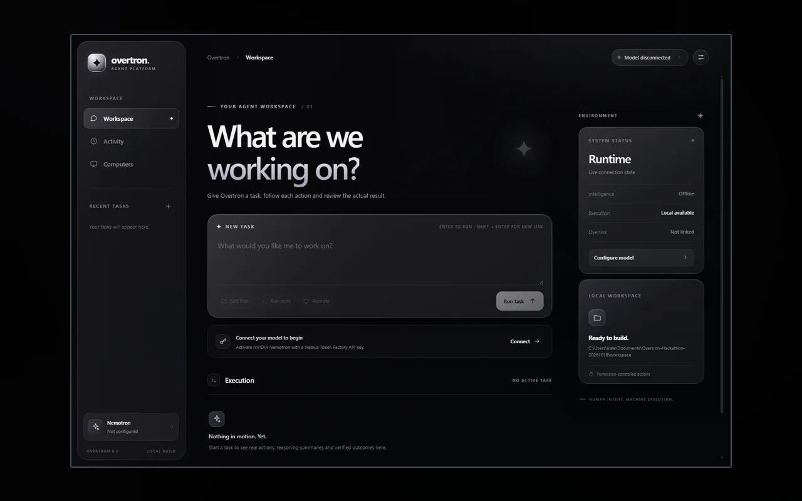
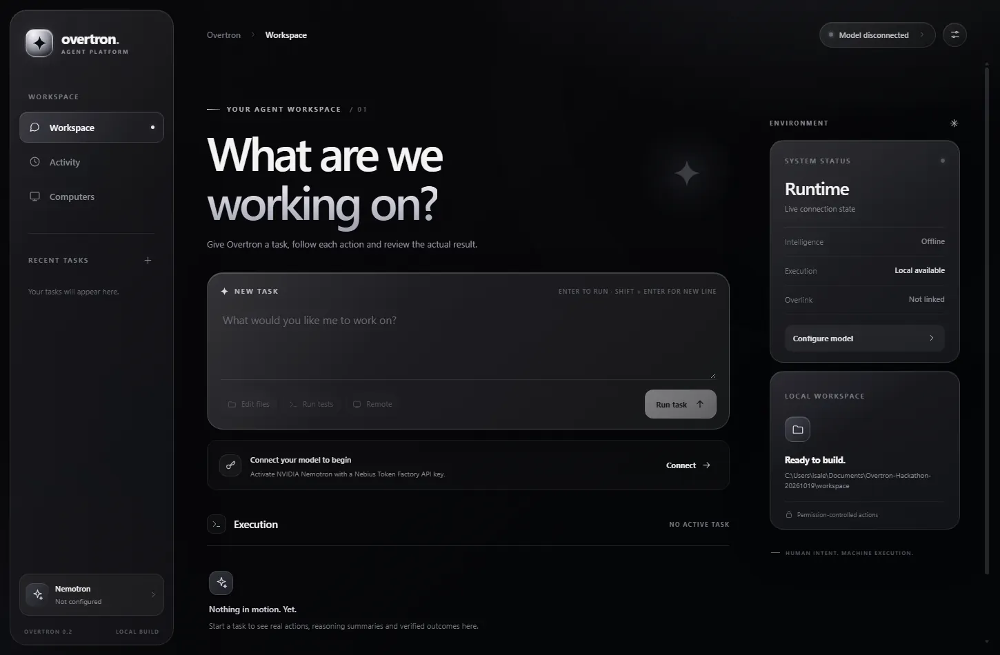

AI TOOLING
Overtron
A workbench for Nemotron-driven tasks.
ORIGINAL PROJECT MATERIAL

Local running web UI captured from the projectNOT A GENERATED UI MOCKUP
01 / Overview
What is Overtron?
Overtron is a separate Nemotron-focused interface for overseeing work and invoking selected Overlink capabilities.
An independent interface for defining work, inspecting execution and connecting selected Overlink tools.
02 / Inside the project
What it actually does.
- Dark/silver local dashboard.
- Agent workspaces and task panel.
- Adapter design for authenticated Overlink MCP calls.
How it works
Its local dashboard presents workspaces, execution activity and tools. The model-side adapter is designed around a configured Nebius/Nemotron endpoint, while the Overlink integration supplies the authorized PC tool layer. A configured key is required for model-backed behavior.
03 / Real material
Watch it. Inspect it.
The local web service was started for inspection and its real interface was captured.


Scope note. Local interface render was captured; live external model API requires its own credentials.